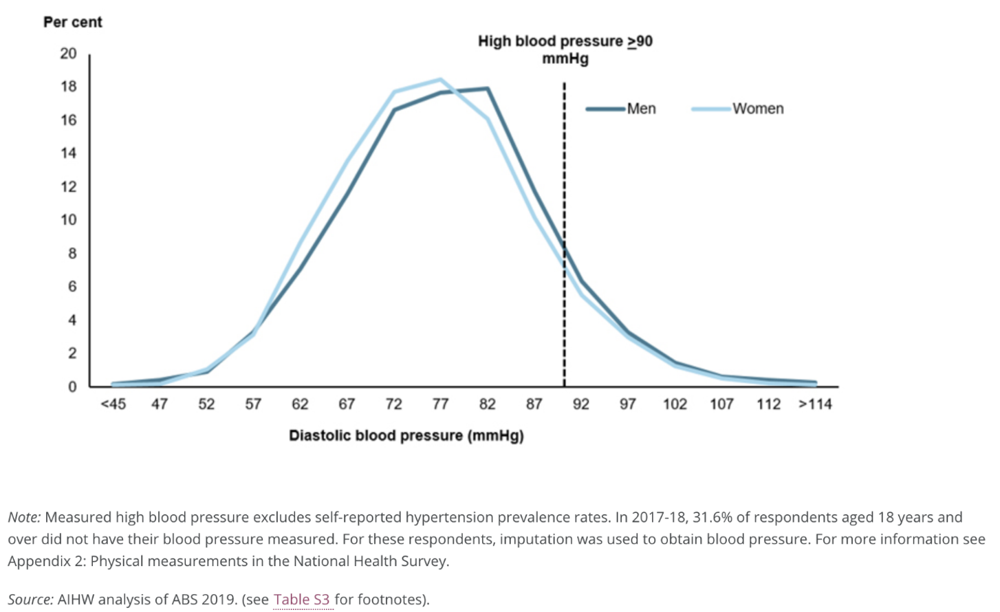
Learning objectives
By the end of this module you will be able to:
- Describe the characteristics of a Normal distribution
- Compute probabilities from a Normal distribution using statistical software
- Briefly outline other types of distributions
- Explain the purpose of sampling, different sampling methods and their implications for data analysis
- Distinguish between standard deviation of a sample and standard error of a mean
- Calculate and interpret confidence intervals for a mean
Optional readings
Kirkwood and Sterne (2001); Chapters 4, 5 and 6. [UNSW Library Link]
Bland (2015); Sections 3.3 and 3.4, Chapter 7, Sections 8.1 to 8.3. [UNSW Library Link]
3.1 Introduction
In this module, we will continue our introduction to probability by considering probability distributions for continuous data. We will introduce one of the most important distributions in statistics: the Normal distribution.
To describe the characteristics of a population we can gather data about the entire population (as is undertaken in a national census) or we can gather data from a sample of the population. When undertaking a research study, taking a sample from a population is far more cost-effective and less time consuming than collecting information from the entire population. When a sample of a population is selected, summary statistics that describe the sample are used to make inferences about the total population from which the sample was drawn. These are referred to as inferential statistics.
However, for the inferences about the population to be valid, a random sample of the population must be obtained. The goal of using random sampling methods is to obtain a sample that is representative of the target population. In other words, apart from random error, the information derived from the sample is expected to be much the same as the information collected from a complete population census as long as the sample is large enough.
3.2 Probability for continuous variables
Calculating the probability for a categorical random variable is relatively straightforward, as there are only a finite number of possible events. However, there are an infinite number of possible values for a continuous variable, and we calculate the probability that the continuous variable lies in a range of values.
3.3 Normal distribution
The frequency plot for many biological and clinical measurements (for example blood pressure and height) follow a bell shape where the curve is symmetrical about the mean value and has tails at either end. Figure 3.1 1 and Figure 3.2 2 demonstrate this type of distribution.
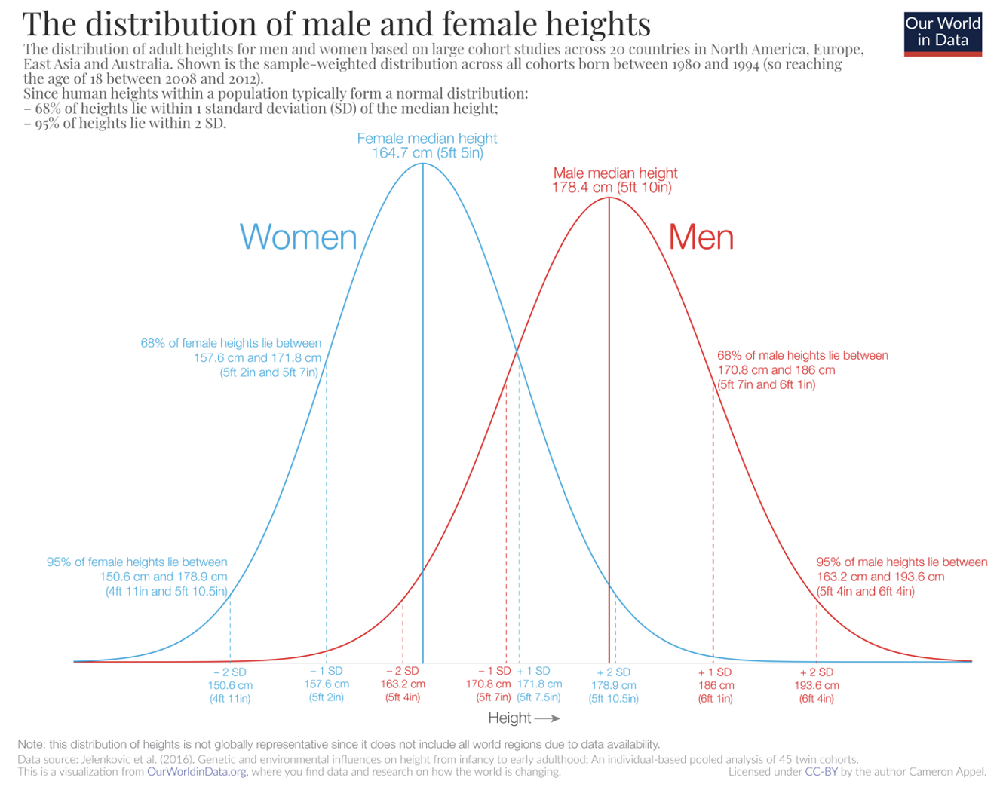
The Normal distribution, also called the Gaussian distribution (named after Johann Carl Friedrich Gauss, 1777–1855), has been shown to fit the frequency distribution of many naturally occurring variables. It is characterised by its bell-shaped, symmetric curve and its tails that approach zero on either side.
There are two reasons for the importance of the Normal distribution in biostatistics (Kirkwood and Sterne, 2003). The first is that many variables can be modelled reasonably well using the Normal distribution. Even if the observed data were not Normally distributed, it can often be made reasonably Normal after applying some transformation of the data. The second (and possible most important) reason, is based on the central limit theorem and will be discussed later in this module.
The Normal distribution is characterised by two parameters: the mean (\(\mu\)) and the standard deviation (\(\sigma\)). The mean defines where the middle of the Normal distribution is located, and the standard deviation defines how wide the tails of the distribution are.
For a Normal distribution, about 68% of the observations lie between \(- \sigma\) and \(\sigma\) of the mean; 95% of the observations lie between \(−1.96 \times \sigma\) and \(1.96 \times \sigma\) from the mean; and almost all the observations (99.7%) lie between \(-3 \times \sigma\) and \(3 \times \sigma\) (Figure 3.3). Also note that the mean is the same as the median, as the curve is symmetric about its mean.
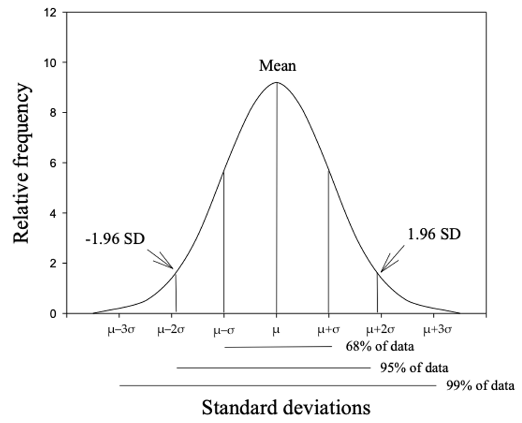
3.4 The Standard Normal distribution
As each Normal distribution is defined by its mean and standard deviation, there are an infinite number of possible Normal distributions. However, every Normal distribution can be transformed to what we call the Standard Normal distribution, which has a mean of zero (\(\mu = 0\)) and a standard deviation of one (\(\sigma = 1\)). The Standard Normal distribution is so important that it has been assigned its own symbol: Z.
Every observation from a Normal distribution \(X\) with a mean \(\mu\) and a standard deviation \(\sigma\) can be transformed to a z-score (also called a Standard Normal deviate) by the formula:
\[ z = \frac{x - \mu}{\sigma} \]
The z-score is simply how far an observation lies from the population mean value, scaled by the population standard deviation.
We can use z-scores to estimate probabilities, as shown in Worked Example 2.2.
Worked Example
This example extends the example of diastolic blood pressure shown in Figure 3.1. Assume that the mean diastolic blood pressure for men is 77.9 mmHg, with a standard deviation of 11. What is the probability that a man selected at random will have high blood pressure (i.e. diastolic blood pressure ≥ 90)?
To estimate the probability that diastolic blood pressure ≥ 90 (i.e. the upper tail probability), we first need to calculate the z-score that corresponds to 90 mmHg.
Using the z-score formula, with x=90, \(\mu\)=77.9 and \(\sigma\)=11:
\[ z = \frac{90 - 77.9}{11} = 1.1 \] Thus, a blood pressure of 90 mmHg corresponds to a z-score of 1.1, or a value 1.1 \(\times \sigma\) above the mean weight of the population.
Figure 3.4 shows the probability of a diastolic blood pressure of 90 mmHg or more in the population for a z-score of greater than 1.1 on a Standard Normal distribution.
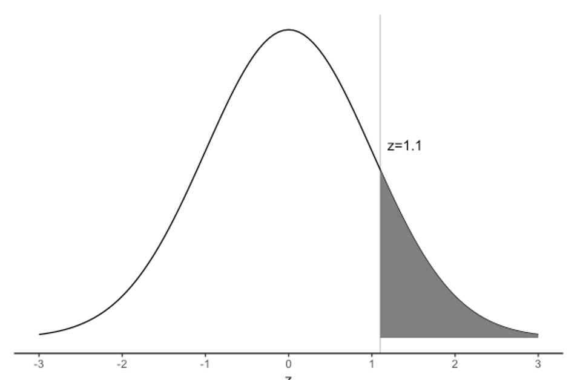
Using software, we find the probability that a person has a diastolic blood pressure of 90 mmHg or more as P(Z ≥ 1.1) = 0.136.
Apart from calculating probabilities, z-scores are most useful for comparing measurements taken from a sample to a known population distribution. It allows measurements to be compared to one another despite being on different scales or having different predicted values.
For example, if we take a sample of children and measure their weights, it is useful to describe those weights as z-scores from the population weight distribution for each age and gender. Such distributions from large population samples are widely available. This allows us to describe a child’s weight in terms of how much it is above or below the population average. For example, if mean weights were compared, children aged 5 years would be on average heavier than the children aged 3 years simply because they are older and therefore larger. To make a valid comparison, we could use the Z-scores to say that children aged 3 years tend to be more overweight than children aged 5 years because they have a higher mean z-score for weight.
3.5 Assessing Normality
There are several ways to assess whether a continuous variable is Normally distributed. The best way to assess whether a variable is Normally distributed is to plot its distribution, using a density plot for example. If the density plot looks appoximately bell-shaped and approximately symmetrical, assuming Normality would be reasonable.
It may be useful to examine a boxplot of a variable in conjunction with a density plot. However a boxplot in isolation is not as useful as a density plot, as a boxplot only indicates whether a variable is distributed symmetrically (indicated by equal “whiskers”). A boxplot cannot give an indication of whether the distribution is bell-shaped, or flat.
For your information: There are formal tests that test for Normality. These tests are beyond the scope of this course and are not recommended.
We can construct a density plot for age in the pbc data introduced in Module 1. We can see that the density plot is approximately approximately bell-shaped and roughly symmetrical. The mean (50.7 years) and median (51 years) are similar, as would be expected for a Normal distribution. Thus, it would be reasonable to assume that age is Normally distributed in this set of data.
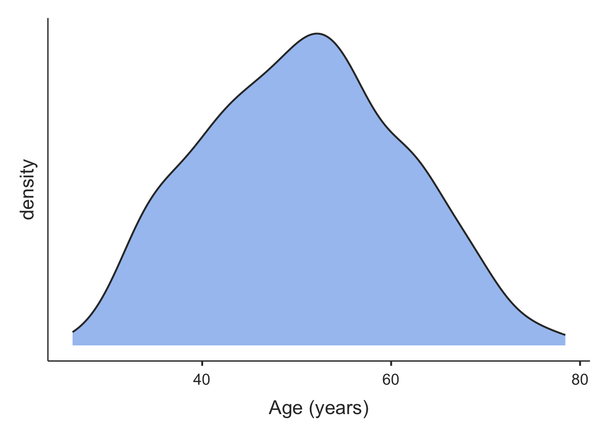
3.6 Non-Normally distributed measurements
Not all measurements are Normally distributed, and the symmetry of the bell shape may be distorted by the presence of some very small or very large values. Non-Normal distributions such as this are called skewed distributions.
When there are some very large values, the distribution is said to be positively skewed.This often occurs when measuring variables related to time, such as days of hospital stay, where most patients have short stays (say 1 - 5 days) but a few patients with serious medical conditions have very long lengths of hospital stay (say 20 - 100 days).
In practice, most parametric summary statistics are quite robust to minor deviations from Normality and non-parametric statistical methods are only required when the sample size is small and/or the data are obviously skewed with some influential outliers.
When the data are markedly skewed, density plots are not all bell-shaped. For example, serum bilirubin measured from participants in the PBC study are presented in Figure 3.6.
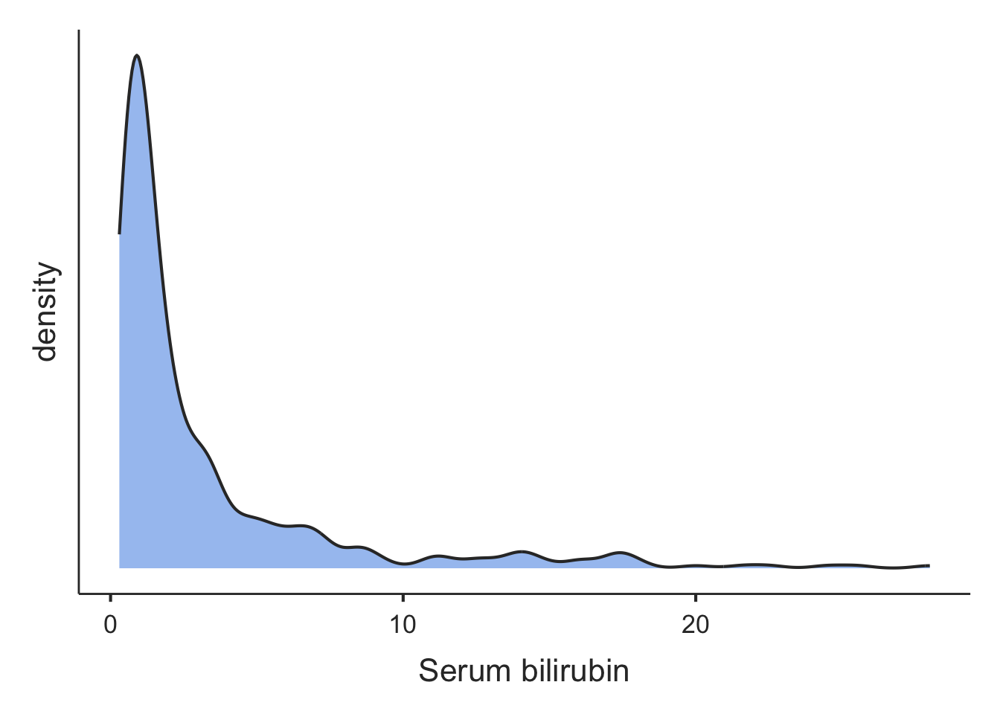
In the plot of c, there is a tail of values to the right, so we would conclude that the distribution is skewed to the right. The mean (3.2 mg/dL) is much larger than the median (1.4 mg/dL), as expected from a skewed distribution.
3.7 Parametric and non-parametric statistical methods
Many statistical methods are based on assumptions about the distribution of the variable – these methods are known as parametric statistical methods. Many methods of statistical inferences based on theoretical sampling properties that are derived from a Normal distribution with the characteristics described above. Thus, it is important that measurements approximate to a Normal distribution before these parametric methods are used. The methods are called ‘parametric’ because they are based on the parameters – the mean and standard deviation - that underlie a Normal distribution. Statistics which do not assume a particular distribution are called distribution-free statistics, or ‘non-parametric statistics’.
In this course, you will learn about both parametric and non-parametric statistical methods. Parametric summary statistical methods include those based on the mean, standard deviation and range (Module 1), and standard error and 95% confidence interval (Module 3). Parametric statistical tests also include t-tests which will be covered in Modules 4 and 5, and correlation and regression described in Module 8.
Non-parametric summary statistical methods are often based on ranks, and may use such statistics as the median, mode and inter-quartile range (Module 1). Non-parametric statistical tests that use ranking are described in Module 9.
3.8 Other types of probability distributions
In this module we have considered a Normal probability distribution and how to use it to measure the precision of continuously distributed measurements. Data also follow other types of distributions which are briefly described below. In other modules in this course, we will be looking at a range of methods to analyse health data and will refer back to these different distributions.
Normal approximation of binomial: When the sample size becomes large, it becomes cumbersome to calculate the exact probability of an event using the binomial distribution. Conveniently, with large sample sizes, the binomial distribution approximates a Normal distribution. The mean and SD of a binomial distribution can be used to calculate the probability of the event as though it was from a Normal distribution.
Poisson distribution: is another distribution which is often used in health research for modelling count data. The Poisson distribution is followed when a number of events happen in a fixed time interval. This distribution is useful for describing data such as deaths in the population in a time period. For example, the number of deaths from breast cancer in one year in women over 50 years old will be an observation from a Poisson distribution. We can also use this to make comparisons of mortality rates between populations.
Many other probability distributions can be derived for functions which arise in statistical analyses but the chi-squared, t and F distributions are the three distributions that are most widely used. These have many applications, some of which are described in later modules.
The chi-squared distribution is a skewed distribution which allows us to determine the probability of a deviation between a count that we observe and a count that we expect for categorical data. One use of this is in conducting statistical tests for categorical data. See Module 7.
A t-distribution is used when the population standard deviation is not known. The t-distribution is appropriate for small samples (<30) and its distribution is bell shaped similar to a Normal distribution but slightly flatter. The t-distribution is useful for comparing mean values. See Module 4 and Module 5.
3.9 Sampling methods
Methods have been designed to select participants from a population such that each person in the target population has an equal probability of being chosen. Methods that use this approach are called random sampling methods. Examples include simple random sampling and stratified random sampling.
In simple random sampling, every person in the population from which the sample is drawn has the same random chance of being selected into the sample. To implement this method, every person in the population is allocated an ID number and then a random sample of the ID numbers is selected. Software packages can be used to generate a list of random numbers to select the random sample.
In stratified sampling, the population is divided into distinct non-overlapping subgroups (strata) according to an important characteristic (e.g. age or sex) and then a random sample is selected from each of the strata. This method is used to ensure that sufficient numbers of people are sampled from each stratum and therefore each subgroup of interest is adequately represented in the sample.
The purpose of using random sampling is to minimise selection bias to ensure that the sample enrolled in a study is representative of the population being studied. This is important because the summary statistics that are obtained can then be regarded as valid in that they can be applied (generalised) back to the population.
A non-representative sample might occur when random sampling is used, simply by chance. However, non-random sampling methods, such as using a study population that does not represent the whole population, will often result in a non-representative sample being selected so that the summary statistics from the sample cannot be generalised back to the population from which the participants were drawn. The effects of non-random error are much more serious than the effects of random error. Concepts such as non-random error (i.e. systematic bias), selection bias, validity and generalisability are discussed in more detail in PHCM9794: Foundations of Epidemiology.
3.10 Standard error and precision
Module 1 introduced the mean, variance and standard deviation as measures of central tendency and spread for continuous measurements from a sample or a population. As described in Module 1, we rarely have data on the entire population but we infer information about the population from a sample. For example, we use the sample mean \(\bar x\) as an estimate of the true population mean \(\mu\).
However, a sample taken from a population is usually a small proportion of the total population. If we were to take multiple samples of data and calculate the sample mean for each sample, we would not expect them to be identical. If our samples were very small, we would not be surprised if our estimated sample means were somewhat different from each other. However, if our samples were large, we would expect the sample means to be less variable, i.e. the estimated sample means would be more close to each other, and hopefully, to the true population mean.
The standard error of the mean
A point estimate is a single best guess of the true value in the population - taken from our sample of data. Different samples will provide slightly different point estimates. The standard error is a measure of variability of the point estimate.
In particular, the standard error of the mean measures the extent to which we expect the means from different samples to vary because of chance due to the sampling process. This statistic is directly proportional to the standard deviation of the variable, and inversely proportional to the size of the sample. The standard error of the mean for a continuously distributed measurement for which the SD is an accurate measure of spread is computed as follows:
\[ \text{SE}(\bar{x}) = \frac{\text{SD}}{\sqrt{n}} \]
Worked Example 3.1: blood pressure of Pima women
The diastolic blood pressure of 733 female Pima indigenous Americans was measured, and a density plot produced (Figure 3.7). These data are saved as mod03_blood_pressure.csv.
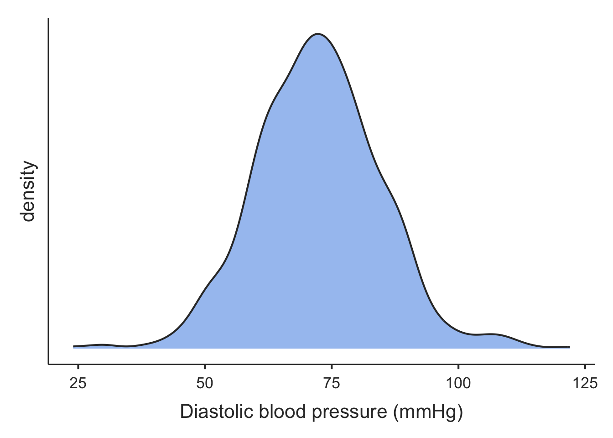
The density plot shows that diastolic blood pressure is approximately normally distributed. The mean diastolic blood pressure in the sample was 72.4 mmHg with a standard deviation of 12.38 mmHg.
Hence, the standard error of the mean is estimated as:
\[ \text{SE}(\bar{x}) = \frac{12.38}{\sqrt{733}} = 0.457 \]
Because the calculation uses the sample size (n) (i.e. the number of study participants) in the denominator, the SE will become smaller when the sample size becomes larger. A smaller SE indicates that the estimated mean value is more precise.
The standard error is an important statistic that is related to sampling variation. When a random sample of a population is selected, it is likely to differ in some characteristic compared with another random sample selected from the same population. Also, when a sample of a population is taken, the true population mean is an unknown value.
Just as the standard deviation measures the spread of the data around the population mean, the standard error of the mean measures the spread of the sample means. Note that we do not have different samples, only one. It is a theoretical concept which enables us to conduct various other statistical analyses.
3.11 Data sovereignty: can data be owned?
Data sovereignty proclaims the right of peoples to govern the collection, ownership and application of their own data. Data sovereignty recognises data not only as information, but as a cultural and economic asset that holds value for the communities it represents.
The principle of data sovereignty advocates strongly for data rights and interests, emphasising that data must be used in ways that support and enhance the collective well-being of the communities from which it collected. A critical aspect of this framework is the avoidance of exploitative research practices, ensuring that research is conducted by or with communities rather than simply on them. This participatory approach recognises communities as active members in the research process rather than passive subjects of study.
The Pima Indian Diabetes Dataset
The importance of data sovereignty principles is highlighted by the Pima Indian Diabetes Dataset (PIDD). The Pima people, living in Arizona USA, are known for high rates of diabetes and obesity. In 1965, the United States National Institutes of Health began an observational study of the Pima community, viewing their reservation as a “natural laboratory” for diabetes research. Originally planned to last ten years, this study continued for approximately forty years, collecting highly personal information including blood pressure, body mass index, and number of pregnancies of Pima Americans.
The data collected during this study became known as the Pima Indian Diabetes Dataset and was subsequently included in the University of California, Irvine (UCI) Machine Learning Repository.(Home - UCI Machine Learning Repository, n.d.) This repository, established in 1987, is a collection of datasets and tools used to test and train machine learning models. Although the PIDD appears to have been removed from the UCI repository, it now appears in major machine learning repositories such as Kaggle. Significantly, this dataset has been used to refine algorithms intended for “knowledge discoveries” that have nothing to do with diabetes, including the prediction of manhole fires.
This case raises profound questions about what might be termed “eternal consent.” The Pima participants who provided their medical data in 1965 could not have realistically been informed of all potential uses for their medical data forty years into the future. The transformation of intimate health data, collected for a specific diabetes research purpose, into a widely distributed dataset for training machine learning algorithms represents a fundamental breach of the principles of data sovereignty. The Pima community had no control over the secondary uses of their data, no ongoing governance role, and no ability to determine whether these uses aligned with their collective well-being or cultural values. This example demonstrates the critical need for robust data sovereignty frameworks that protect Indigenous peoples’ rights to control not only the initial collection of their data but also its subsequent use, storage, and dissemination.
3.12 Central limit theorem
Even though we now have an estimate of the mean and its standard error, we might like to know what the mean from a different random sample of the same size might be. To do this, we need to know how sample means are distributed. In determining the form of the probability distribution of the sample mean (\(\bar{x}\)), we consider two cases:
When the population distribution is unknown:
The central limit theorem for this situation states:
In selecting random samples of size \(n\) from a population with mean \(\mu\) and standard deviation \(\sigma\), the sampling distribution of the sample mean \(\bar{x}\) approaches a normal distribution with mean \(\mu\) and standard deviation \(\tfrac{\sigma}{\sqrt{n}}\) as the sample size becomes large.
The sample size n = 30 and above is a rule of thumb for the central limit theorem to be used. However, larger sample sizes may be needed if the distribution is highly skewed.
When the population is assumed to be normal:
In this case the sampling distribution of \(\bar{x}\) is normal for any sample size.
3.13 95% confidence interval of the mean
Earlier, we showed that the characteristics of a Standard Normal Distribution are that 95% of the data lie within 1.96 standard deviations from the mean (Figure 3.2). Because the central limit theorem states that the sampling distribution of the mean is approximately Normal in large enough samples, we expect that 95% of the sample mean values would fall within 1.96 × SE units above and below the true mean population value.
For example, if we took 100 different random samples from the population of Pima women and calculated the mean diastolic blood pressure for each of the 100 samples, approximately 95% of these sample means would fall within 1.96 × SE of the population mean weight.
This interpretation of the SE is translated into the concept of precision as a 95% confidence interval. A 95% confidence interval is a range of values within which we have 95% confidence that the true population mean lies. If repeated samples were taken a very large number of times, and a 95% confidence interval was calculated for each sample, 95% of the confidence intervals would contain the true population mean.
The calculation of the 95% confidence interval for a mean is as follows:
\[ \bar{x} \pm 1.96 \times \text{SE}( \bar{x} ) \] This is the generic formula for calculating 95% CI for any summary statistic. In general, the mean value can be replaced by the point estimate of a rate or a proportion and the same formula applies for computing 95% CIs, i.e.
\[ 95\% \text{ CI} = \text{point estimate} \pm 1.96 \times \text{SE}(\text{point estimate)} \]
The main difference in the methods used to calculate the 95% CI for different point estimates is the way the SE is calculated. The methods for calculating 95% CI around proportions and other ratio measures will be discussed in Module 6.
The use of 1.96 as a general critical value to compute the 95% CI is determined by sampling theory. For the confidence interval of the mean, the critical value (1.96) is based on normal distribution (true when the population SD is known). However, in practice, statistical packages will provide slightly different confidence intervals because they use a critical value obtained from the t-distribution. The t-distribution approaches a normal distribution when the sample size approaches infinity, and is close to a normal distribution when the sample size is ≥30.The critical values obtained from the t-distribution are always larger than the corresponding critical value from the normal distribution. The difference gets smaller as the sample size becomes larger. For example, when the sample size n=10, the critical value from the t-distribution is 2.26 (rather than 1.96); when n= 30, the value is 2.05; when n=100, the value is 1.98; and when n=1000, the critical value is 1.96.
The critical value multiplied by SE (for normal distribution, 1.96 × SE) is called the maximum likely error for 95% confidence.
The t-distribution and when should I use it?
The population standard deviation (\(\sigma\)) is required for calculation of the standard error. Usually, \(\sigma\) is not known and the sample standard deviation (\(s\)) is used to estimate it. It is known, however, that the sample standard deviation of a normally distributed variable underestimates the true value of \(\sigma\), particularly when the sample size is small.
Someone by the pseudonym of Student came up with the Student’s t distribution with (\(n-1\)) degrees of freedom to account for this underestimation. It looks very much like the standardised normal distribution, only that it has fatter tails (Figure 3.8). As the degrees of freedom increase (i.e. as \(n\) increases), the t-distribution gradually approaches the standard normal distribution. With a sufficiently large sample size, the Student’s t-distribution closely approximates the standardised normal distribution.
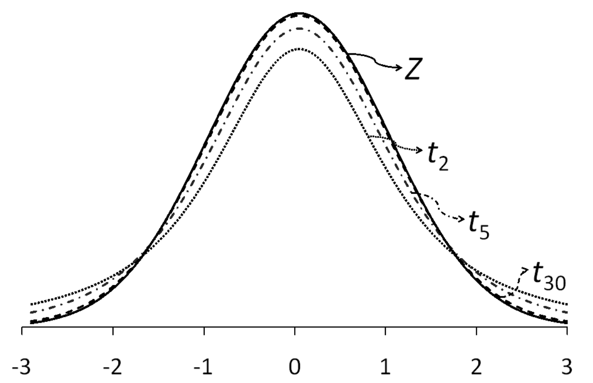
If a variable \(X\) is normally distributed and the population standard deviation \(\sigma\) is known, using the normal distribution is appropriate. However, if \(\sigma\) is not known then one should use the student t-distribution with (\(n – 1\)) degrees of freedom.
Worked Example 3.2: blood pressure of Pima women
Using our example of diastolic blood pressure measured from 733 female Pima indigenous Americans, we can use software to calculate the mean, its standard error, and the 95% confidence interval of the mean:
| n | Mean | Standard deviation | Standard error of the mean | 95% confidence interval of the mean |
|---|---|---|---|---|
| 733 | 72.4 | 12.38 | 0.46 | 71.5 to 73.3 |
We can interpret this confidence interval as: we are 95% confident that the true mean diastolic blood pressure of female Pima indigenous Americans lies between 71.5 and 73.3 mmHg.
Worked Example 3.2: 95% CI of a mean using summarised data
The publication of a study using a sample of 242 participants reported a sample mean systolic blood pressure of 128.4 mmHg and a sample standard deviation of 19.56 mmHg. Find the 95% confidence interval for the mean systolic blood pressure.
Using jamovi or R, we obtain a 95% confidence interval from 125.9232 to 130.8768.
We are 95% confident that the true mean systolic blood pressure of the population from which the sample was drawn lies between 125.9 kg and 130.9 mmHg.
Jamovi notes
3.14 Generating new variables
We commonly need to create new variables based on existing variables in our data. For example, body size is often summarised using the Body Mass Index (BMI). BMI is calculated as: \(\frac{\text{weight (kg)}}{\text{height (m)}^2}\).
In this demonstration, we will import a selection of records from a large health survey, stored in the file mod03_health_survey.xlsx. The health survey data contains 1140 records, comprising:
- sex: 1 = respondent identifies as male; 2 = respondent identifies as female
- height: height in meters
- weight: weight in kilograms
To generate a new variable, we use Data > Compute:
- click Data to open the spreadsheet, and click into an empty column
- click Setup then NEW COMPUTED VARIABLE
- enter the name of the new variable, here
BMI - in the formula (*fx) box enter:
weight / height^2(note: ^2 represents “to the power of 2”, or “squared”)
You should check the construction of any new variable buy examining a density plot and/or a boxplot:
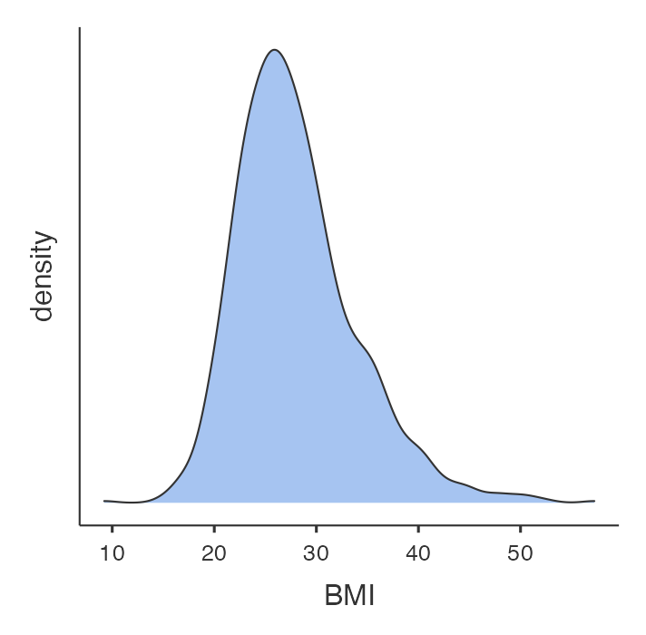
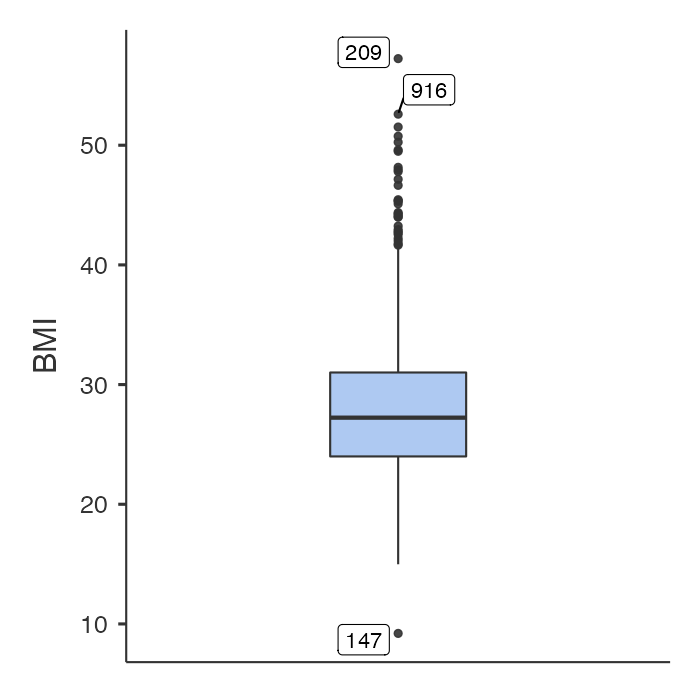
In the general population, BMI ranges between about 15 to 30. It appears that BMI has been correctly generated in this example, perhaps with some unsual values that might require investigation.
3.15 Summarising data by another variable
We will often want to calculate the same summary statistics by another variable. For example, we might want to calculate summary statistics for BMI for males and females separately. We can do this in jamovi by defining sex as a by-variable.
This can be done easily in jamovi by defining a Split by variable. For example, to summarise BMI for males and females separately, we use sex as the Split by variable:
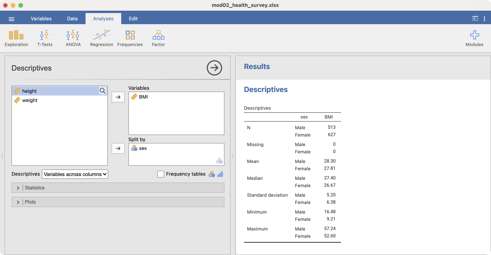
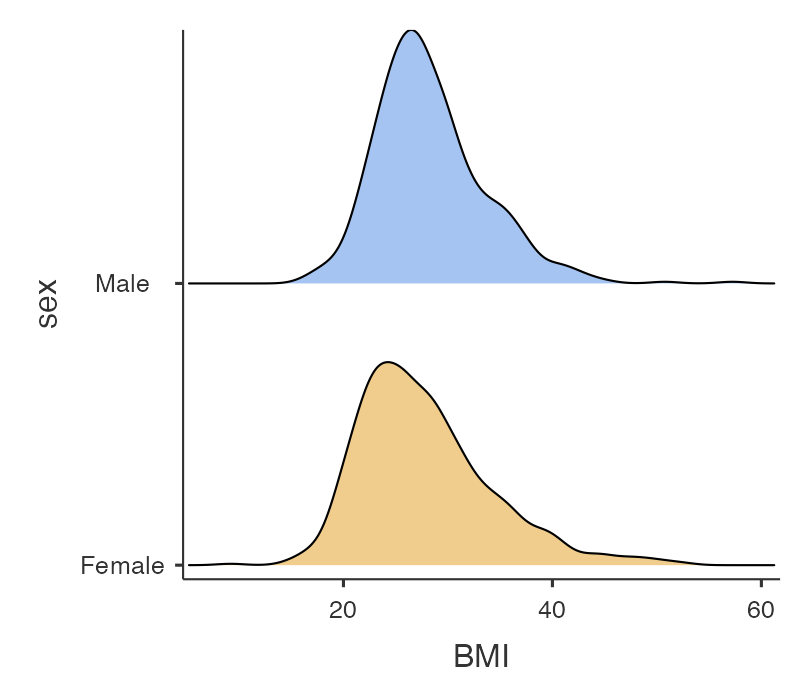
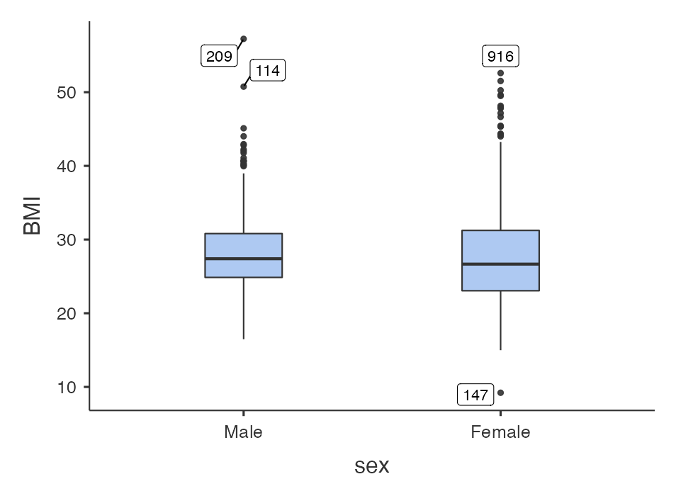
3.16 Computing probabilities from a Normal distribution
jamovi does not have a point-and-click method for computing probabilities from a Normal distribution. Here, instructions are provided for using a third-party applet. This Normal Distribution Applet has been posted at https://homepage.stat.uiowa.edu/~mbognar/applets/normal.html, and provides a simple and intuitive way to compute probabilities from a Normal distribution. The applet requires three pieces of information:
- \(\mu\): the mean of the Normal distribution being considered
- \(\sigma\): the standard deviation of the Normal distribution being considered
- \(x\): the value being considered
We also need to consider whether we are interested in the probability being greater than x, or less than x.
For example, to obtain the probability of obtaining 0.5 or greater from a standard normal (i.e. \(/mu\)=0, \(/sigma\)=1) distribution:
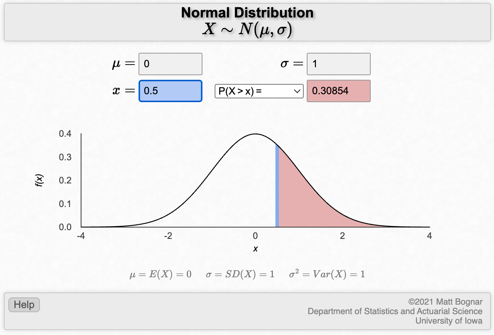
The Normal curve of interest is shaded, and the probability is provided as 0.30854.
To calculate the worked example: Assume that the mean diastolic blood pressure for men is 77.9 mmHg, with a standard deviation of 11. What is the probability that a man selected at random will have high blood pressure (i.e. diastolic blood pressure greater than or equal to 90)?
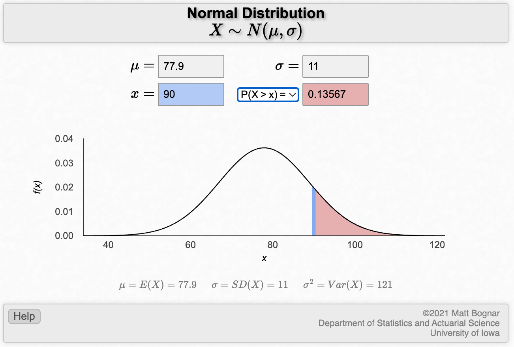
3.17 Calculating a 95% confidence interval of a mean: Individual data
To demonstrate the computation of the 95% confidence interval of a mean, we can use the data from mod03_blood_pressure.csv. We can use Exploration > Descriptives to calculate the mean, its standard error and the 95% confidence interval for the mean. Choose dbp as the analysis variable, and select Std. error of Mean and Confidence interval for Mean in the Statistics section:
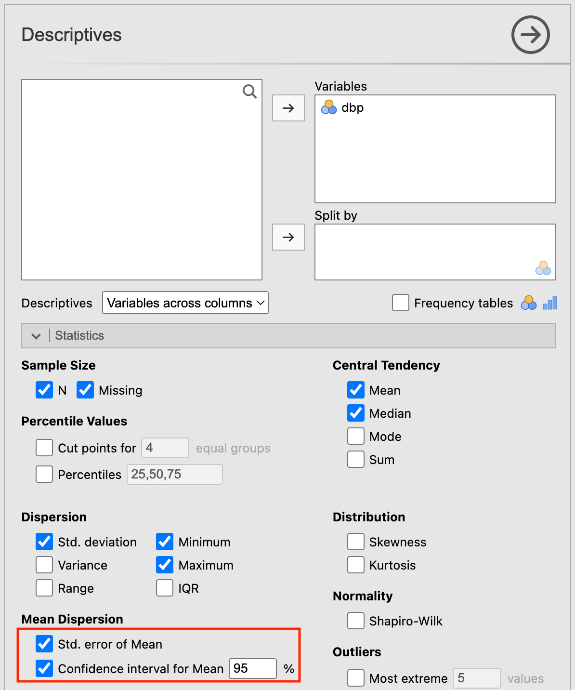
The descriptives output appears:
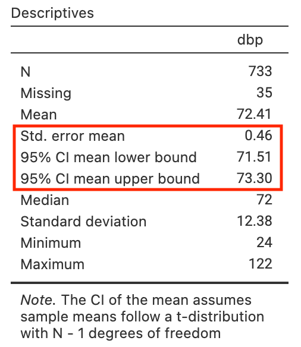
3.18 Calculating a 95% confidence interval of a mean: Summarised data
For Worked Example 3.2 where we are given the sample mean, sample standard deviation and sample size, we need to install a new Jamovi module, called esci. To install a new module, click the large + Modules button on the right-hand side of the Jamovi window, and then choose jamovi library:
To install a new module:
- Ensure that the middle tab, Available is selected;
- Type esci in the search bar. The esci module will appear;
- Click INSTALL to install the module
- Click the up-arrow to exit from the Install Module window
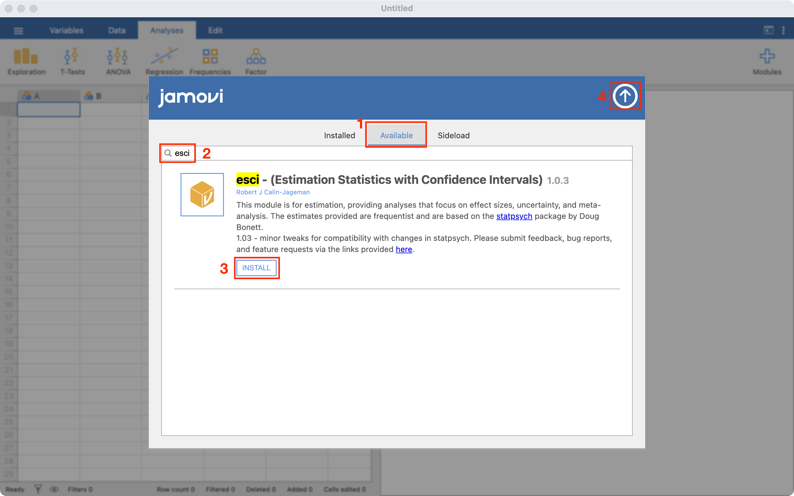
To calculate the 95% confidence interval, choose esci > Means and Medians > Single Group. Select the Analyze summary data tab, and enter the known information: here 128.4 as the Mean, 19.56 as the Standard deviation and 242 as the Sample size. Choose Extra details to obtain the Standard Error of the mean:
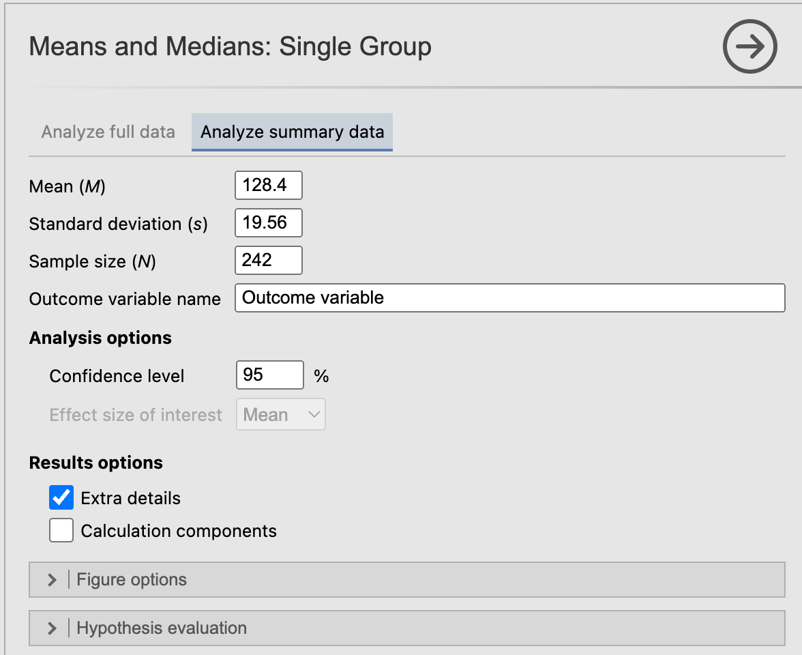
The 95% confidence interval is listed as the lower limit (LL) and the upper limit (UL):
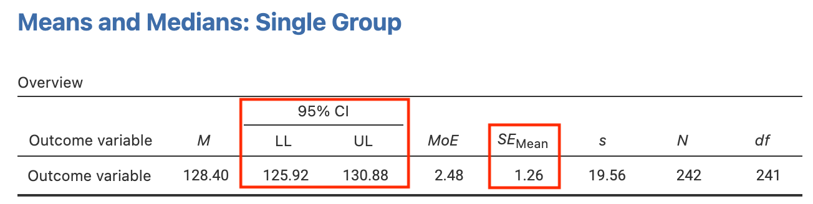
R notes
3.19 Importing Excel data into R
A common type of file that data are stored in is a Microsoft Excel file (.xls or .xlsx). In this demonstration, we will import a selection of records from a large health survey, stored in the file mod03_health_survey.xlsx.
The health survey data contains 1140 records, comprising:
- sex: 1 = respondent identifies as male; 2 = respondent identifies as female
- height: height in meters
- weight: weight in kilograms
To import data from Microsoft Excel, we can use the read_excel() function in the readxl package.
# Install the package if required
# install.packages("readxl")
library(readxl)
survey <- read_excel("data/examples/mod03_health_survey.xlsx")
summary(survey) sex height weight
Min. :1.00 Min. :1.220 Min. : 22.70
1st Qu.:1.00 1st Qu.:1.630 1st Qu.: 68.00
Median :2.00 Median :1.700 Median : 79.40
Mean :1.55 Mean :1.698 Mean : 81.19
3rd Qu.:2.00 3rd Qu.:1.780 3rd Qu.: 90.70
Max. :2.00 Max. :2.010 Max. :213.20 We can see that sex has been entered as a numeric variable. We should transform it into a factor so that we can assign labels to each category:
survey$sex <- factor(survey$sex, levels=c(1,2), labels=c("Male", "Female"))
summary(survey$sex) Male Female
513 627 We also note that height looks like it has been entered as meters, and weight as kilograms.
3.20 Generating new variables
Our health survey data contains information on height and weight. We often summarise body size using BMI: body mass index which is calculated as: \(\frac{\text{weight (kg)}}{(\text{height (m)})^2}\)
We can create a new column in our data frame in many ways, such as using the following approach:
dataframe$new_column <- <formula>
For example:
survey$bmi <- survey$weight / (survey$height^2)We should check the construction of the new variable by examining some records. The head() and tail() functions list the first and last 6 records in any dataset.
head(survey)# A tibble: 6 × 4
sex height weight bmi
<fct> <dbl> <dbl> <dbl>
1 Male 1.63 81.7 30.8
2 Male 1.63 68 25.6
3 Male 1.85 97.1 28.4
4 Male 1.78 89.8 28.3
5 Male 1.73 70.3 23.5
6 Female 1.57 85.7 34.8tail(survey)# A tibble: 6 × 4
sex height weight bmi
<fct> <dbl> <dbl> <dbl>
1 Female 1.65 95.7 35.2
2 Male 1.8 79.4 24.5
3 Female 1.73 83 27.7
4 Female 1.57 61.2 24.8
5 Male 1.7 73 25.3
6 Female 1.55 91.2 38.0We should also check the construction of any new variable buy examining a density plot and/or a boxplot:
library(ggplot2)
ggplot(data=survey, mapping=aes(x=bmi)) +
geom_density() +
theme_classic() +
labs(x="BMI (kg/m2)")
ggplot(data=survey, mapping=aes(y=bmi)) +
geom_boxplot() +
theme_classic() +
labs(y="BMI (kg/m2)") +
theme(
axis.title.x = element_blank(),
axis.text.x = element_blank(),
axis.ticks.x = element_blank())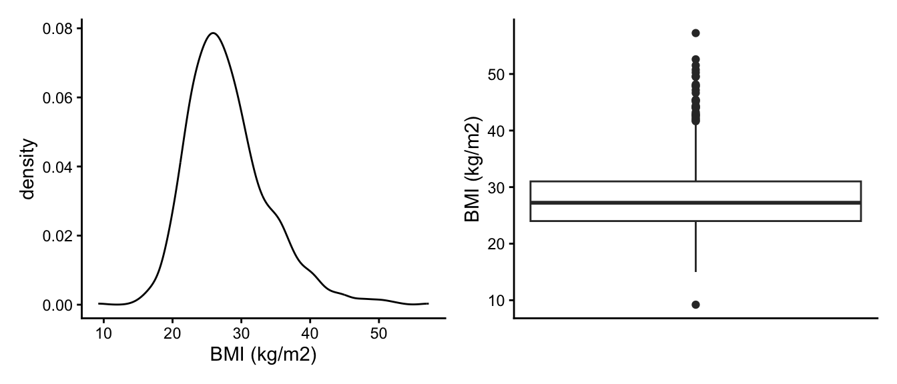
In the general population, BMI ranges between about 15 to 30. It appears that BMI has been correctly generated in this example. We should investigate the very low and some of the very high values of BMI, but this will be left for another time.
3.21 Introducing the dplyr package
dplyr is a package that provides a set of functions to manipulate data. We have previously created new columns of data, or changed existing columns using <-. In dplyr, we can use the mutate() function to create new variables or to change existing variables. The advantage of mutate() is that we can create multiple new variables in the one function, using code that is easy to read.
For example, in this module we have used <- to:
- define
sexas a factor, and - create BMI.
We could do these manipulations using mutate() as:
library(dplyr)
survey <- mutate(survey, sex = factor(sex, levels=c(1,2), labels=c("Male", "Female")),
bmi = weight / height^2)Note that the results of <- and mutate() are identical. Some authors, however, see the mutate() approach easier to read.
3.22 Summarising data by another variable
We will often want to calculate the same summary statistics by another variable. For example, we might want to calculate summary statistics for BMI for males and females separately. We can do this in in the descriptives function by defining sex as a splitBy variable:
library(jmv)
descriptives(data=survey, vars=bmi, splitBy = sex)
DESCRIPTIVES
Descriptives
────────────────────────────────────────────
sex bmi
────────────────────────────────────────────
N Male 513
Female 627
Missing Male 0
Female 0
Mean Male 28.29561
Female 27.81434
Median Male 27.39592
Female 26.66667
Standard deviation Male 5.204975
Female 6.380523
Minimum Male 16.47519
Female 9.209299
Maximum Male 57.23644
Female 52.59516
──────────────────────────────────────────── 3.23 Using ggplot2 to plot density plots by another variable
We can define a grouping variable as a facet_wrap to create a grid of graphs separately for each value of the grouping variable. For example, to create a density plot for each sex, we would use facet_wrap(vars(sex)) as follows:
ggplot(data=survey, mapping=aes(x=bmi)) +
geom_density() +
facet_wrap(vars(sex)) +
theme_classic() +
labs(x="BMI (kg/m2)")3.24 Using ggplot2 to plot boxplots plots by another variable
As for density plots, we can use a facet_wrap for boxplots. Alternatively (and possibly easier), we can define sex as an x variable in our mapping statement:
ggplot(data=survey, mapping=aes(y=bmi, x=sex)) +
geom_boxplot() +
theme_classic() +
labs(y="BMI (kg/m2)")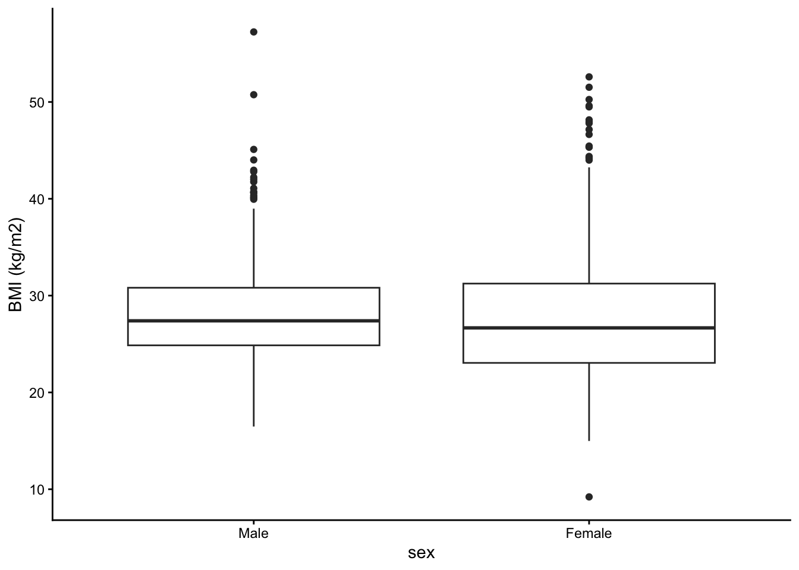
3.25 Summarising a single column of data
In Module 1, we started with a very simple analysis: reading in six ages, and them using summary() to calculate descriptive statistics. We then went on to use the decriptives() function in the jmv package as more flexible way of calculating descriptive statistics. Let’s revisit this analysis:
# Author: Timothy Dobbins
# Date: 5 April 2022
# Purpose: My first R script
library(jmv)
age <- c(20, 25, 23, 29, 21, 27)
# Use "summary" to obtain descriptive statistics
summary(age) Min. 1st Qu. Median Mean 3rd Qu. Max.
20.00 21.50 24.00 24.17 26.50 29.00 # Use the "descriptives" function from jmv to obtain descriptive statistics
descriptives(age)Error:
! Argument 'data' must be a data frameThe summary() function has worked correctly, but the descriptives() function has given an error: Error: Argument 'data' must be a data frame. What on earth is going on here?
The error gives us a clue here - the descriptives() function requires a data frame for analysis. We have provided the object age: a vector. As we saw in Section 1.13.6.3, a vector is a single column of data, while a data frame is a collection of columns.
In order to summarise a vector using the descriptives() function, we must first convert the vector into a data frame using as.data.frame(). For example:
# Author: Timothy Dobbins
# Date: 5 April 2024
# Purpose: My first R script
library(jmv)
age <- c(20, 25, 23, 29, 21, 27)
# Use "summary" to obtain descriptive statistics
summary(age) Min. 1st Qu. Median Mean 3rd Qu. Max.
20.00 21.50 24.00 24.17 26.50 29.00 # Create a new data frame from the vector age:
age_df <- as.data.frame(age)
# Use "descriptives" to obtain descriptive statistics for age_df
descriptives(age_df)
DESCRIPTIVES
Descriptives
──────────────────────────────────
age
──────────────────────────────────
N 6
Missing 0
Mean 24.16667
Median 24.00000
Standard deviation 3.488075
Minimum 20.00000
Maximum 29.00000
────────────────────────────────── 3.26 Computing probabilities from a Normal distribution
We can use the pnorm function to calculate probabilities from a Normal distribution:
pnorm(q, mean, sd)calculates the probability of observing a value ofqor less, from a Normal distribution with a mean ofmeanand a standard deviation ofsd. Note that ifmeanandsdare not entered, they are assumed to be 0 and 1 respectively (i.e. a standard normal distribution.)pnorm(q, mean, sd, lower.tail=FALSE)calculates the probability of observing a value of more thanq, from a Normal distribution with a mean ofmeanand a standard deviation ofsd.
To obtain the probability of obtaining 0.5 or greater from a standard normal distribution:
pnorm(0.5, lower.tail = FALSE)[1] 0.3085375To calculate the worked example: Assume that the mean diastolic blood pressure for men is 77.9 mmHg, with a standard deviation of 11. What is the probability that a man selected at random will have high blood pressure (i.e. diastolic blood pressure greater than or equal to 90)?
pnorm(90, mean = 77.9, sd = 11, lower.tail = FALSE)[1] 0.13566613.27 Calculating a 95% confidence interval of a mean: individual data
To demonstrate the computation of the 95% confidence interval of a mean, we can use the data from mod03_blood_pressure.csv:
pima <- read.csv("data/examples/mod03_blood_pressure.csv")We can examine the data set using the summary command:
summary(pima) dbp
Min. : 24.00
1st Qu.: 64.00
Median : 72.00
Mean : 72.41
3rd Qu.: 80.00
Max. :122.00 The mean and its 95% confidence interval can be obtained many ways in R. We will use the descriptives() function within the jmv package to calculate the standard error of the mean, and a confidence interval, by including se = TRUE and ci = TRUE:
library(jmv)
descriptives(data=pima, vars=dbp, se=TRUE, ci=TRUE)
DESCRIPTIVES
Descriptives
────────────────────────────────────────
dbp
────────────────────────────────────────
N 733
Missing 0
Mean 72.40518
Std. error mean 0.4573454
95% CI mean lower bound 71.50732
95% CI mean upper bound 73.30305
Median 72
Standard deviation 12.38216
Minimum 24
Maximum 122
────────────────────────────────────────
Note. The CI of the mean assumes
sample means follow a
t-distribution with N - 1 degrees
of freedom3.28 Calculating a 95% confidence interval of a mean: summarised data
For Worked Example 3.2 where we are given the sample mean, sample standard deviation and sample size. R does not have a built-in function to calculate a confidence interval from summarised data, but we can write our own.
Note: writing your own functions is beyond the scope of this course. You should copy and paste the code provided to do this.
### Copy this section
ci_mean <- function(n, mean, sd, width=0.95, digits=3){
lcl <- mean - qt(p=(1 - (1-width)/2), df=n-1) * sd/sqrt(n)
ucl <- mean + qt(p=(1 - (1-width)/2), df=n-1) * sd/sqrt(n)
print(paste0(width*100, "%", " CI: ", format(round(lcl, digits=digits), nsmall = digits),
" to ", format(round(ucl, digits=digits), nsmall = digits) ))
}
### End of copy
ci_mean(n=242, mean=128.4, sd=19.56, width=0.95)[1] "95% CI: 125.923 to 130.877"ci_mean(n=242, mean=128.4, sd=19.56, width=0.99)[1] "99% CI: 125.135 to 131.665"Activities
Activity 3.1
An investigator wishes to survey people living with agoraphobia (a type of anxiety disorder). People with agoraphobia find it difficult to leave environments they know and consider to be safe for fear of having anxiety or a panic attack.
The investigator buys an ad on Facebook asking for volunteer participants to complete an in-person interview. A total of 950 replies are received of which the investigator randomly selects 50. However, only 15 volunteers turn up for their interview.
- Which of the following statements is true?
- The final 15 participants are likely to be a representative sample of the population available to the investigator
- The final 15 participants are likely to be a representative sample of the population of people living with agoraphobia
- The randomly selected 50 participants are likely to be a representative sample of people with agoraphobia who replied to the Facebook ad
- None of the above
- The basic problem confronted by the investigator is that:
- The accessible population might be different from the target population
- The sample has been chosen using an unethical method
- The sample size was too small
- It is difficult to obtain a sample of people living with agoraphobia in a scientific way
- Think about how you might design a study to recruit people living with agoraphobia.
Activity 3.2
A dental epidemiologist wants to estimate the mean weekly consumption of dietary sugar among preschool children in Kensington, NSW. She takes four samples from different preschools in the area. The estimated daily intake of total sugar consumption (in grams) are saved in Activity_3.2.rds.
- Obtain the sample size, the mean and standard deviation for total sugar consumption for each preschool. Plot the distribution of total sugar consumption by preschool. What do you notice about the variability of total sugar consumption by preschool?
- Obtain the standard error of the mean total sugar consumption by preschool. What happens to the standard error as the sample size increases?
- Obtain the 95% confidence interval of the mean total sugar consumption by preschool, and comment.
- What can you say about the precision of the sample mean as the sample size increases?
- Interpret the 95% confidence interval of the mean total sugar consumption for one preschool. What population are we making inferences about? Is this valid?
Activity 3.3
The dataset for this activity is the same as the one used in Activity 1.3 in Module 1: a study was conducted to investigate the general health of undergraduate students at Australian universities. A random selection of 218 UNSW undergradute students from UNSW were enrolled, and their diastolic blood pressures were recorded. The file is Activity_1.3.csv on Moodle.
- Plot diastolic blood pressure and describe the distribution.
- Use jamovi or R to obtain an estimate of the mean, standard error of the mean and the 95% confidence interval for the mean diastolic blood pressure.
- Interpret the 95% confidence interval for the mean diastolic blood pressure.
Activity 3.4
Using the health survey data (Activity_3.4.xlsx) described in the computing notes of this module, create a new variable, BMI, which is equal to a person’s weight (in kg) divided by their height (in metres) squared (i.e. \(\text{BMI} = \frac{\text{weight (kg)}}{\text{[height (m)]}^2}\). Categorise BMI using the categories:
- Underweight: BMI < 18.5
- Normal weight: 18.5 \(\le\) BMI < 25
- Overweight: 25 \(\le\) BMI < 30
- Obese: BMI \(\ge\) 30
Note: BMI does not necessarily reflect body fat distribution or describe the same degree of fatness in different individuals. However, at a population level, BMI is a practical and useful measure for identifying overweight or obesity. 3
Create a two-way table to display the distribution of BMI categories by sex (sex: 1 = respondent identifies as male; 2 = respondent identifies as female). Does there appear to be a difference in categorised BMI between males and females?
Activity 3.5
The data set of hospital stay data for 1323 hypothetical patients is available on Moodle in csv format (Activity_3.5.csv). Import this dataset into jamovi or R. There are two variables in this dataset:
- female: female=1; male=0
- los: length of stay in days
- Use jamovi or R to examine the distribution of length of stay: overall; and separately for females and males. Comment on the distributions.
- Use jamovi or R to calculate measures of central tendency for hospital stay to obtain information about the average duration of hospital stay. Which summary statistics should you report and why? Report the appropriate statistics of the spread and measure of central tendency chosen.
- Calculate the measures of central tendency for hospital duration separately for males and females. What can you conclude from comparing these measures for males and females?
Activity 3.6
If weights of men are Normally distributed with a population mean \(\mu\) = 87, and a population standard deviation, \(\sigma\) = 8 kg:
- What is the probability that a man will weigh 95 kg or more? Draw a Normal curve of the area represented by this probability in the population (i.e. with \(\mu\) = 87 kg and \(\sigma\) = 8 kg).
- What is the probability that a man will weigh more than 75 kg but less than 95 kg? Draw the area represented by this probability on a Normal curve.
Source: https://www.aihw.gov.au/reports/risk-factors/high-blood-pressure/contents/high-blood-pressure (accessed March 2021)↩︎
Source: https://ourworldindata.org/human-height (accessed March 2021)↩︎
https://www.aihw.gov.au/reports/overweight-obesity/overweight-and-obesity/contents/measuring-overweight-and-obesity↩︎